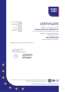
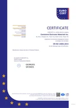

Semiconductor Materials Manufacturer半導體材料製造商
Advanced Materials for
Semiconductor Fabrication
半導體製程
先進材料解決方案
CEMI specializes in the development and toll-manufacturing of high-purity photoresist, strippers, wafer cleaners, and protective coatings — engineered for the precision demands of modern semiconductor and display production.
恆煦電子材料（CEMI）專注於高純度光阻、剝離液、晶圓清洗液及保護塗料的研發與委託代工，為現代半導體與顯示器製造提供嚴苛製程所需的精密材料。
| Photoresist Capacity / Month光阻月產能 | 100t |
|---|---|
| Auxiliary Chemicals / Month輔助化學品月產能 | 360t |
| Total Facility Area廠房總面積 | 3,000m² |
| Clean Room (ISO Class 6)無塵室（ISO Class 6） | 600m² |
| Patents (TW · CN · US · PCT)專利數（台灣·中國·美國·PCT） | 70+ |
Certifications認證
-

EN ISO 9001:2015
Quality Management System — systematic process control for consistent product quality
品質管理系統 — 系統化製程管控，確保產品品質一致性
-

EN ISO 14001:2015
Environmental Management System — commitment to sustainable and responsible manufacturing
環境管理系統 — 致力於永續與負責任的製造實踐
About CEMI關於恆煦
Built on Expertise,
Driven by Innovation
深厚技術底蘊，
創新驅動未來
Consistent Electronic Materials Inc. (CEMI / 恆煦電子材料股份有限公司) is a Taiwan-based semiconductor material manufacturer with deep expertise in photoresist chemistry and process-critical specialty chemicals.
恆煦電子材料股份有限公司（CEMI）是一家專注於光阻化學與製程關鍵特用化學品的台灣半導體材料製造商，擁有深厚的技術積累。
We explore emerging applications across IC front-end fabrication and advanced packaging, delivering products that exceed industry expectations. Our global patent portfolio of over 70 granted patents — covering Taiwan, China, the USA, and PCT — reflects our commitment to continuous innovation.
我們積極探索IC前段製程與先進封裝等新興應用領域，持續提供超越業界期望的產品。涵蓋台灣、中國、美國及PCT的逾70項已授專利，展現了我們對持續創新的堅定承諾。
With a 3,000 m² facility and a 600 m² Class 1,000 (ISO Class 6) clean room in Toufen, Miaoli, Taiwan, CEMI operates at the quality and precision standards demanded by leading semiconductor manufacturers.
坐落於台灣苗栗縣頭份市，CEMI擁有3,000平方公尺廠房及600平方公尺Class 1,000（ISO Class 6）無塵室，以半導體龍頭廠商所要求的品質與精密標準全力運營。
-
Robert Hsu
許銘案
Founder創辦人
-
Akihiko Ikawa
井川 昭彥
Co-founder共同創辦人
Products & Services產品與服務
Specialty Chemicals for
Semiconductor Fabrication
半導體製程
關鍵特用化學品
Our product line covers every critical chemistry step in photolithography and wafer surface preparation, formulated for tight process windows and high-yield manufacturing.
我們的產品線涵蓋光刻與晶圓表面處理的每一個關鍵化學步驟，針對嚴苛製程窗口與高良率製造精心配製。
-
Photoresist光阻
Positive Photoresist
正型光阻
High-resolution positive-tone photoresist for IC front-end patterning, display panel, and LED applications. Designed for consistent film uniformity and process latitude.
高解析度正型光阻，適用於IC前段圖形化、顯示面板及LED製程，具備優異的薄膜均勻性與製程容忍度。
-
Photoresist光阻
Negative Photoresist
負型光阻
Negative-tone photoresist requiring high chemical resistance and robust pattern integrity, suitable for specialized patterning in semiconductor and compound semiconductor fabrication.
負型光阻具備高化學耐性與穩健的圖形完整性，適用於半導體及化合物半導體製程中的特殊圖形化應用。
-
Process Chemical製程化學品
Photoresist Stripper
光阻剝離液
Effective stripping formulations for complete photoresist removal post-etch or post-implant, with minimal substrate damage and compatibility with advanced device structures.
高效剝離配方，可在蝕刻或離子佈植後完整去除光阻，對基板損傷極低，兼容先進元件結構。
-
Surface Preparation表面處理
Wafer Cleaner
晶圓清洗液
High-purity cleaning chemistries for wafer surface preparation — removing organic residues, metallic contaminants, and particles to meet stringent semiconductor cleanliness standards.
高純度晶圓表面處理清洗液，有效去除有機殘留、金屬污染物及微粒，符合嚴格的半導體潔淨標準。
-
Protective Coating保護塗料
Semiconductor Protective Coating
半導體保護塗料
Specialty protective coatings for semiconductor and display applications, providing mechanical protection, chemical resistance, and surface passivation during processing and handling.
適用於半導體與顯示器的特種保護塗料，在製程與搬運過程中提供機械保護、耐化學性及表面鈍化功能。
-
Custom客製化
Custom Formulation R&D
客製化配方研發
Collaborative R&D to develop application-specific chemistries. From exploratory research to pilot-scale validation, our team works alongside customers to solve unique process challenges.
與客戶協同研發應用專屬化學品，從探索性研究到中試驗證，我們的團隊攜手客戶解決獨特的製程挑戰。
Toll Manufacturing委託代工（Toll Manufacturing）
Our primary business model我們的核心業務模式
- customers supply formulation specifications客戶提供配方規格
- CEMI provides precision manufacturing in our ISO-certified, cleanroom-equipped facilityCEMI在ISO認證、無塵室設備齊全的廠房內進行精密製造
- Scalable up to 100 t/month for photoresist and 360 t/month for auxiliary chemicals光阻產能可達每月100噸，輔助化學品每月360噸，可依需求彈性擴充
Research & Development研究與開發
CEMI's in-house R&D team drives innovation backed by 70+ patents across Taiwan, China, the USA, and PCT. We support customers in next-generation materials for IC front-end, advanced packaging, display, LED, and compound semiconductor applications.
CEMI內部研發團隊以逾70項橫跨台灣、中國、美國及PCT的專利為後盾，持續驅動創新，支援客戶開發IC前段、先進封裝、顯示器、LED及化合物半導體的次世代材料。
Capabilities設備能力
Testing & Process Equipment
檢驗與製程設備
Our facility is equipped with industry-standard analytical and process tools to ensure material quality, support R&D, and validate customer processes end-to-end.
廠內配備業界標準的分析與製程設備，確保材料品質、支援研發，並對客戶製程進行端對端驗證。
| ICP-MS感應耦合電漿質譜儀 | Trace elemental & isotopic analysis微量元素與同位素分析 |
|---|---|
| UV-Vis Spectrophotometer紫外可見光吸收光譜儀 | Concentration & optical property analysis濃度與光學特性分析 |
| ATR FT-IR Spectrometer全反射式紅外光譜儀 | Molecular & chemical structure identification分子與化學結構鑑定 |
| Goniometer動態接觸角量測儀 | Surface wettability characterization表面潤濕性表徵 |
| Liquid Particle Counter液體懸浮微粒計數儀 | Particle counting in liquids液體中懸浮微粒計數 |
| Kinematic Viscometer動黏度計 | Kinematic viscosity measurement動黏度量測 |
| Vibronic Viscometer音波式黏度計 | Acoustic wave viscosity measurement聲波黏度量測 |
| Solid Content Meter固含量量測儀 | Solids content measurement固含量量測 |
| Karl-Fischer TitratorKF式微量水分滴定儀 | Moisture content titration微量水分滴定 |
| Acid/Base & Redox Titrator自動酸鹼氧化還原滴定儀 | Automated acid-base & redox titration自動酸鹼及氧化還原滴定 |
| Spin Coater旋轉塗布機 | ×4 |
|---|---|
| Slit Coater精密狹縫塗佈機 | |
| Spray Coater精密光阻噴塗機 | |
| Mask Aligner精密對位曝光機 | ×3 |
| E-Gun Film Deposition電子束真空鍍膜機 | |
| Nikon i-line Stepperi-line 步進式精密曝光機 | |
| Laser Direct Imaging (LDI)雷射直寫曝光機 | |
| Conveyor Wet Etching Line自動濕式蝕刻機 | |
| Conveyor Developing Line自動顯影機 | |
| Filmetrics光學膜厚量測儀 | |
| Optical Microscope光學顯微鏡 | |
| Laser Confocal Microscope雷射共聚焦顯微鏡 | |
| Scanning Electron Microscope (SEM)掃描式電子顯微鏡 |
Get in Touch聯絡我們
Contact Us
聯絡我們
Interested in toll manufacturing, product inquiries, or R&D collaboration? Reach out to our team.
對委託代工、產品詢問或研發合作有興趣？歡迎與我們的團隊聯絡。
- Address地址
- No. 442-1, Zhonghua Road,
Toufen City, Miaoli County 351, Taiwan351 苗栗縣頭份市中華路 442-1 號 - Phone電話
- +886-3-762-3148
- Fax
- +886-3-762-3147